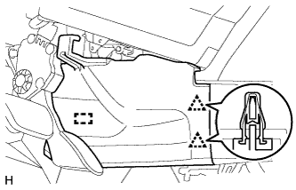
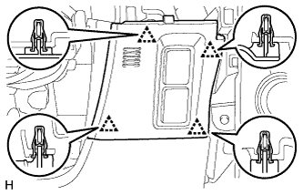
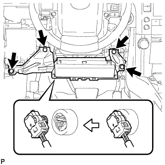

MAIN BODY ECU > REMOVAL |
| 1. DISCONNECT CABLE FROM NEGATIVE BATTERY TERMINAL |
| Condition | Waiting Time |
| Vehicle enrolled in G-BOOK system | 6 minutes |
| Vehicle not enrolled in G-BOOK system | 1 minute |
| 2. REMOVE DOOR SCUFF PLATE ASSEMBLY LH |
 |
Put protective tape around the door scuff plate.
| *1 | Protective Tape |
Using a screwdriver, detach the 4 clips, 10 claws and 2 guides.
Disconnect the connector and remove the door scuff plate.
| 3. REMOVE COWL SIDE TRIM BOARD LH |
 |
Remove the clip.
Detach the clip and claw and remove the cowl side trim board.
| 4. REMOVE NO. 1 INSTRUMENT PANEL UNDER COVER SUB-ASSEMBLY |
 |
Remove the screw.
Detach the 2 clips and 2 guides.
Disconnect the connector, detach the clamp and remove the No. 1 instrument panel under cover.
| 5. REMOVE FRONT NO. 1 CONSOLE BOX INSERT |
|  |
Detach the 2 clips and guide and remove the front No. 1 console box insert.
| 6. REMOVE INSTRUMENT PANEL FINISH PANEL END LH |
 |
Detach the 11 clips and remove the instrument panel finish panel end.
| 7. REMOVE INSTRUMENT SIDE PANEL LH |
 |
Put protective tape around the instrument side panel.
| *1 | Protective Tape |
Using a moulding remover, detach the 3 clips and 2 guides and remove the instrument side panel.
| 8. REMOVE NO. 2 SWITCH HOLE BASE |
 |
Put protective tape around the No. 2 switch hole base.
| *1 | Protective Tape |
Using a moulding remover, detach the 5 clips and claw.
Disconnect each connector and remove the No. 2 switch hole base.
| 9. REMOVE NO. 1 INSTRUMENT PANEL FINISH CUSHION |
 |
Put protective tape around the No. 1 instrument panel finish cushion.
| *1 | Protective Tape |
Using a moulding remover, detach the 4 clips.
Disconnect the connector and remove the No. 1 instrument panel finish cushion.
| 10. REMOVE LOWER INSTRUMENT PANEL FINISH PANEL ASSEMBLY |
|  |
Detach the 4 clips.
Disconnect each connector and cooler thermistor and remove the instrument panel finish panel.
| 11. REMOVE NO. 1 INSTRUMENT PANEL REGISTER ASSEMBLY |
 |
Detach the 5 clips and remove the No. 1 instrument panel register.
| 12. REMOVE LOWER INSTRUMENT PANEL FINISH PANEL SUB-ASSEMBLY |
 |
Using a screwdriver, detach the 2 claws and open the cover.
| *1 | Protective Tape |
 |
Remove the 2 bolts <C>.
Detach the 13 clips and 2 guides.
Disconnect each connector and cable and remove the lower instrument panel finish panel.
| 13. REMOVE LOWER NO. 1 INSTRUMENT PANEL AIRBAG ASSEMBLY |
|  |
Remove the 4 bolts and airbag assembly.
Disconnect the connector.
| 14. REMOVE DRIVER SIDE JUNCTION BLOCK ASSEMBLY |
 |
Disconnect the 3 connectors.
Detach the 2 claws and disconnect the 2 connectors labeled (1) as shown in the illustration.
Disconnect the connector labeled (2).
Remove the bolt and 2 nuts and disconnect the driver side junction block assembly.
 |
Detach the claw and disconnect the connector as shown in the illustration.
 |
Detach the 2 claws and release the connector's lock as shown in the illustration.
 |
Detach the claw and disconnect the connector as shown in the illustration.
Remove the driver side junction block assembly.
| 15. REMOVE MULTIPLEX NETWORK BODY ECU |
 |
Press the claw of the junction block as shown in the illustration to release the lock.
| *1 | Multiplex Network Body ECU |
| *2 | Driver Side Junction Block |
| *3 | Protective Tape |
With the junction block lock released, insert a screwdriver with its tip wrapped with protective tape horizontally between the multiplex network body ECU and junction block.
 |
Using the screwdriver, carefully raise the multiplex network body ECU until the connector becomes disengaged.
 |
Raise the multiplex network body ECU as shown by arrow (1), and then pull it out as shown by arrow (2) in the illustration.